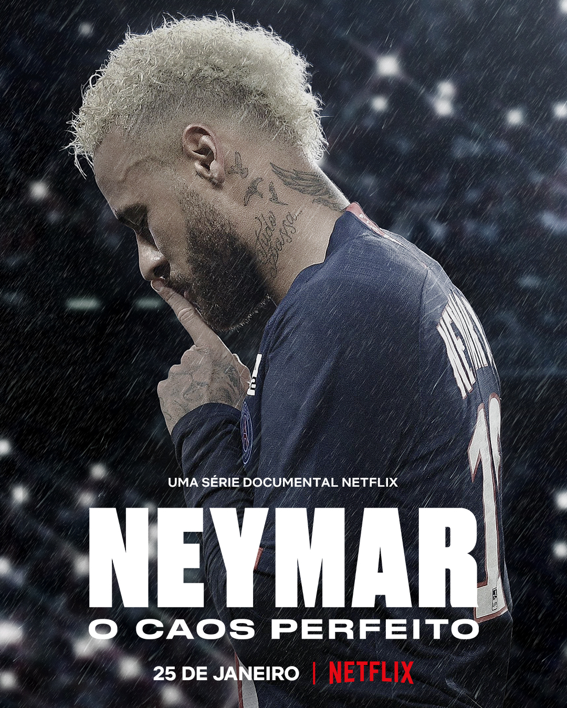

Com três episódios de 50 a 60 minutos cada, a produção apresenta um lado ainda pouco conhecido de Neymar Jr., sem fugir das controvérsias. A obra resgata parte da história do jogador e acompanha sua ascensão à fama no Santos, seus dias de glória no FC Barcelona e a montanha-russa com a Seleção Brasileira e o Paris Saint Germain. Também revela a máquina de marketing por trás de Neymar, comandada por seu pai, Neymar da Silva Santos, mais conhecido como Neymar Pai. Repleta de estrelas, há ainda depoimentos dos jogadores como David Beckham, Lionel Messi, Kylian Mbappé, Daniel Alves e Thiago Silva e dos atletas Gabriel Medina e Bruninho, entre outras lendas, que avaliam o lugar de Neymar na história do esporte.
SINOPSE:

Neymar: O Caos Perfeito é dirigido por David Charles Rodrigues e tem como produtores-executivos LeBron James e Maverick Carter, por meio de sua marca de empoderamento esportivo vencedora do Emmy, UNINTERRUPTED. Devin Johnson, Daniel Sillman, Jamal Henderson, Philip Byron, Ross M. Dinerstein, Ross Girard e Angus Wall também atuam como produtores executivos.
ONDE FOI LANÇADO E MAIS INFORMAÇÕES DO FILME:
Um dos maiores craques de futebol da atualidade vai entrar em campo na Netflix a partir de 25 de janeiro de 2022. A nova série documental Neymar: O Caos Perfeito mergulha nos bastidores da vida de um dos atletas mais famosos e bem pagos do mundo, que acumula tanto títulos quanto controvérsias.